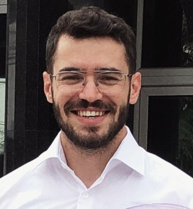

Valmir Morina, ka lindur në vitin 1993 ne Gjakovë, Kosovë.Shkollen fillore dhe të mesme e ka përfunduar ne vendlindje, të mesmen dhe fakultetin e "Inxhinierisë së ndërtimit" ne Prishtinë.
Këtë vit ka perfunduar edhe studimet master ne UBT në Prishtinë, drejtimi "Inxhinieri e ndertimit"
Punon si inxhinier i ndërtimtarisë
Momentalisht punon si dizajner grafik freelancer. Portfolio
Nje nder synimet e tij kohëve të fundit ka qenë të mesoj web dizajnin që të zgjerohet pak më shumë në tregun online
Adresa dhe kontakti
Rr. Adem Dehari, Matiqan 10000 Prishtinë, Republika e Kosoves